January 8 Tuesday The celestial sights have always fascinated me. How does the sun rise in the east and set in the west on all days? The sun is always there in the sky during the day. What about the moon? On one day in the evening it is like a crescent on the western horizon and on another day, at night, it is like a full circle on the eastern horizon. The position of stars is also changing. How do these things happen?
Page 27
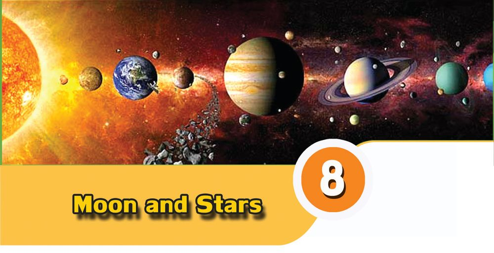
Page 28


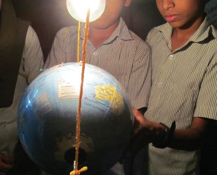
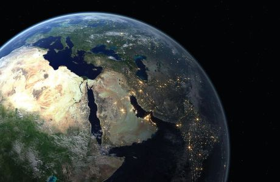
Basic Science - VI The excerpt given above is from Shaji’s diary entries. Have you ever had similar doubts? What have you learnt about the sun, the earth and the moon so far?
$ $
The Earth is spherical in shape. The Earth and the moon receive light from the sun.
$ $ Day and night
$
Does light fall everywhere on the earth at the same time?
$
What causes days and nights?
Photograph of earth from outer space
Let’s do an activity. Materials required: Model of earth (globe), a steel rod and an arrangement for lighting a bulb Activity Remove the globe’s stand. Arrange the bulb and the globe as shown in the figure. The north pole of the globe should be towards the north. Light the bulb after ensuring maximum darkness in the class room. The bulb is used in place of the sun. Imagine that the globe is the earth. Now observe the globe from the side of its north pole. Don’t you see light in the portion facing the sun and darkness on the other side? Gently turn the globe to the left. Now don’t you see that the dark portion entering to the lighted area and the lighted area moving into the dark area? When you turn the globe to the left, in which direction is its rotation? Put mark at the appropriate box:
$ $ 100
From east to west From west to east
Page 29


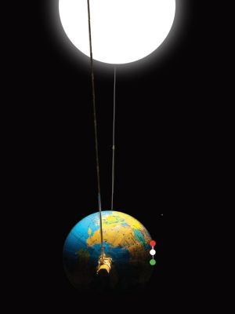
Basic Science - VI What do you understand from this activity? Write down your findings in the science diary.
The earth spins from west to east. It is due to the earth’s rotation that day and night continuously appear. See 'Ravum Pakalum' in School Resources in IT@School, Edubuntu.
Sunrise and sunset We see the sun rising in the east and setting in the west. The very next day the sun rises in the east again. How does the sun setting in the west rise in the east again? Activity
$ $
Locate our approximate position in the globe.
$
Fix a small red colour bindi at the top end, a white one in the middle and green at the bottom.
$
Imagine that you are on the white bindi. Now the bindis at the ends are in your east and west.
$ $
What is the colour of the bindi on the east?
On that area, fix a pin in the east-west direction using a cellotape.
What about colour of the one in the west?
Light the bulb and gently turn it to the left. Observe the positions of the white bindi when there is sunrise, noon and sunset. On the basis of your findings complete the following table.
Time
The position of white bindi
Sunrise
....................................................................................
Noon
....................................................................................
Sunset
When the white bindi moves from light to darkness.
101
Page 30


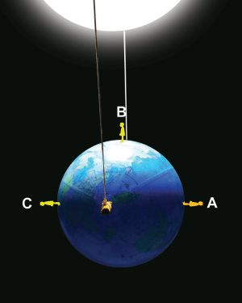
Basic Science - VI Due to the rotation of the earth, those in the region moving from darkness to light feel sunrise and for those going from light to darkness experience the sunset. Mark positions A, B and C on the globe, as shown in the figure. Make models of children using thermocol and fix them in these positions. Which is the east and the west of each child? On the basis of the observations, complete the following table:
1
In which position will the child see the sunrise?
2
In which direction does A see the sun?
3
In which position does the child experience noon?
4
Where does B see the sun?
5
In which position does the child see the sunset?
6
In which direction does C see the sun?
What are the inferences you arrive at by analysing the table? Try to turn the globe from the north pole. Don’t you see that people in each place experience sunrise and sunset? In fact, the sun which appears in the east in the morning, the sun above the head at noon and the sun which sets in the west in the evening remains in the same place. It is the rotation of the earth that causes day and night.
The moon’s path in the sky We see the sun rising in the east and setting in the west every day. But do you see the moon like this every day ? Where did you see the moon last night? Do you see the moon every day in the same place during sunset? What is the secret behind the moon appearing at different positions each day?
102
Page 31


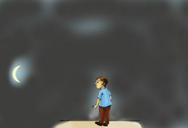
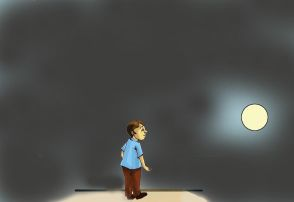
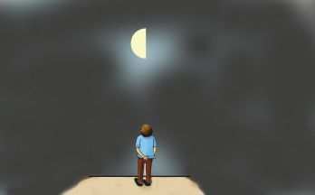

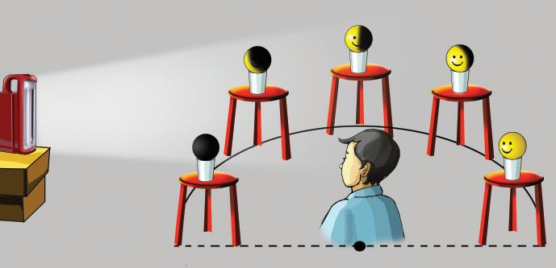
Basic Science - VI
Let’s observe the moon Given below are the positions of the moon at the time of sunset observed by Appu on three different days.
W
$ $
E
W
E
W
E
Is there a change in the position of the moon? In which direction does the change of position take place ? ...............................................................................................................
The position of the moon appears to change because of the revolution of the moon around the earth. Moon completes one revolution around the earth in 27 13 days.
The mystery of moon’s crescent Did you notice any other features when you observed the moon? Don’t you see that the shape of the moon also changes along with its change in position each day? Sometimes we see it in the shape of a crescent and sometimes as a full circle. Why is it so? Try out the following activity. Materials required: Five yellow plastic smiley balls, five glass cups, five stools and an emergency lamp. Activity Draw a semicircle on the floor of the class room in east-west direction. Arrange the stools, the cups and the balls in five equidistant positions as shown in the figure. The
2
3
4
1
W View of the child positioned at the centre of the circle
5
E
103
Page 32


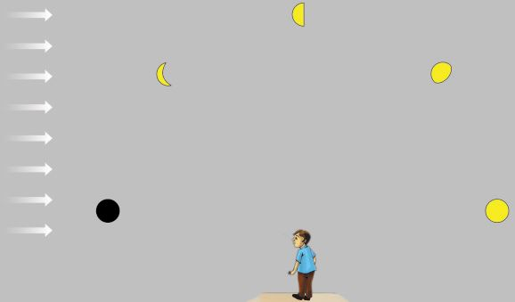
Basic Science - VI smiling face of all the balls should face the centre of the circle. Light the emergency lamp and place it in the west side in such a way that the light falls on the balls. As far as possible, prevent the light from the outside entering the classroom by closing doors and windows. From the centre of the circle, observe all the five balls.
$
The smiling face of the ball placed in which position is completely exposed to light?
$
The smiling face of the ball placed in which position is not exposed to any light at all?
The smiling face of the ball placed in which position is partially lit by the light? 3 Imagine that the semicircle is the
$
half of the path along which the moon revolves, and the balls as the moon you see on different days. Observe the figure.
2
1
4
5
Different positions of the moon W E in its path of revolution around the earth are depicted here. $ Is it possible to see the moon when it reaches the position marked 1? Why? $ What change occurs in the appearance of the moon when it comes to the position marked 2? $ In which position do you see the full moon?
$
In which position do you see the half moon?
Analyse the figure and match the facts given below by drawing lines: Table 1 Table 2 When the moon comes Half of the lighted area of the moon is seen to 1 (Half Moon) When the moon comes The whole of the lighted portion of the moon faces to 3 the earth (Full Moon day) When the moon comes Since the dark area of the moon faces the earth, to 5 the moon cannot be seen (New Moon day)
104
Page 33


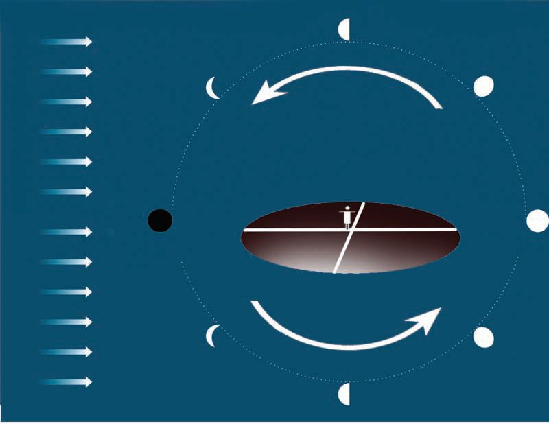
Basic Science - VI The moon’s illuminated portion becomes increasingly visible on the earth from the new moon day to the full moon day. What about the changes that happen from full moon day to new moon day? Repeat the above experiment by bringing slight changes. Change the semicircle drawn on the ground into a full circle. Place the balls in positions 2, 3 and 4 in their corresponding positions on the other semicircle. The smiling face should face the centre of the circle. Switch on the emergency lamp. Standing at the centre of the circle, observe the balls in the order from 5 to 1. Write down your findings in the science diary.
3 2
Waning
4
N
1 W
5 E
S 2
Waxing
4
3
The difference in the visibility of the lighted and dark areas of the moon when observed from the earth is the reason for waxing and waning of the moon. From the new moon day to the full moon day, the lighted portion of the moon becomes more visible. This is called waxing. From the full moon day to the new moon day, there is a decrease in the visibility of the lighted area of moon from the earth. This is called waning.
105
Page 34


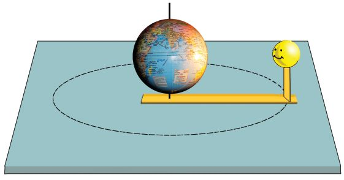
Basic Science - VI
The peculiarity of lunar rotation We have learnt about the earth’s rotation. Does the moon also rotate like this? Try this activity. Materials required: Reaper pieces of 30 cm and 10 cm length, two yellow smiley balls, a small globe without its stand , an umbrella rib and a double sided tape.
$
Make a small hole at one end of the reaper. Fix the small reaper at the other end, perpendicular to the surface.
$
Insert the rib of the umbrella through the poles of the globe and fix it on the table through the hole in the reaper.
$
Using the double sided tape, fix the smiley ball on the reaper in such a way that it faces the equatorial part of the globe.
Holding the umbrella rib firmly pressed, complete a revolution by turning. Observe the direction of the smiling face. Doesn't the ball revolve showing the same face? This is how the moon revolves around the earth. But, has rotation taken place here? Do the above activity once again to find this out. Place another ball on a glass tumbler on the table. The smiling face of the ball on the glass and the ball on the reaper must face the same direction. Now, make the moon revolve one fourth of the path. In which direction is the face of the moon now? Next rotate the ball on the glass without changing its position. Make the moon revolve one fourth of the circle each. Turn the ball on the glass cup accordingly. Doesn’t the ball complete one rotation by the time the moon completes one revolution?
106
Page 35


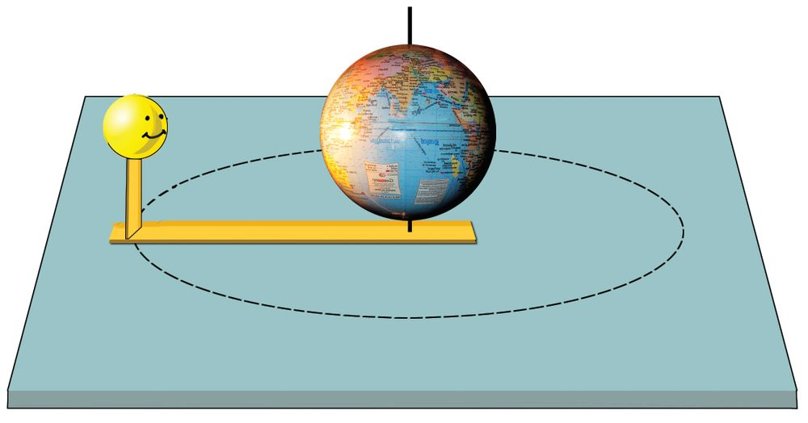
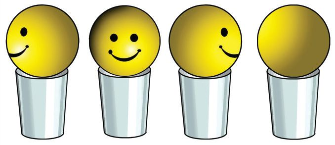

Basic Science - VI
1
2 3
2
3
4
1 4
Lets do the activity once again. Write down your findings in the science diary.
The moon completes a revolution around the earth in 27 13 days. It takes the same time to complete one rotation as well. That is why only one face of the moon appears in the direction of the earth always.
Celestial friends Do you see only the moon in the sky at night? What are the other things you see?
$ $ How interesting it is to watch the stars on a clear sky at night! Are they all of the same colour? What are the colours of the stars you see? Dont you see dim as well as bright stars? How many stars in the sky can you count at a time? With the help of reading notes, record your findings in the science diary.
Lo! The innumerable stars! We can see around 3000 stars at a time if we observe the sky from a dark place. Due to the earths rotation, the stars appear to rise and set. Hence you can see around 6000 stars if you observe the sky throughout the night. Lakhs of stars can be seen if observed through a telescope. There are many crores of stars in the universe.
107
Page 36


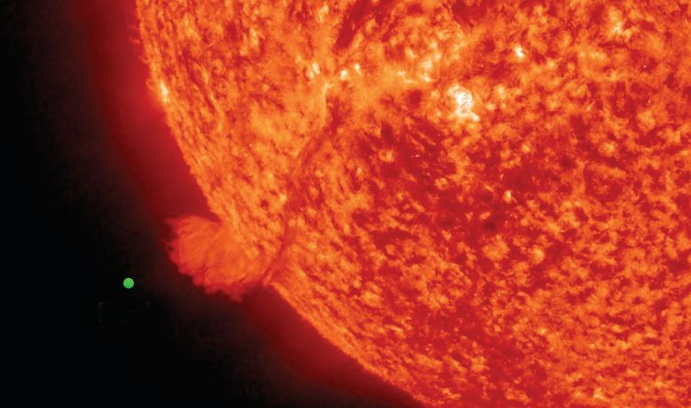
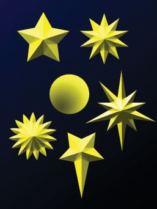
Basic Science - VI
Shape of stars Draw the picture of a star in your science diary. Compare the picture you have drawn with that of your friends. With which shape given here does your drawing match? The sun, the moon and the stars are all celestial spheres. In which shape do we draw a full moon? If so, don’t you think the sun and stars should be drawn in the same shape?
Stars are self luminous celestial bodies. The rays of light from the stars undergo continuous change in its direction while traversing through various layers in the atmosphere. This is why stars appear to twinkle.
Size of stars Which star is the nearest to the earth? How big does the sun appear to us? Is the sun bigger than the earth? Analyse the following figure:
Sun Earth
108
Page 37


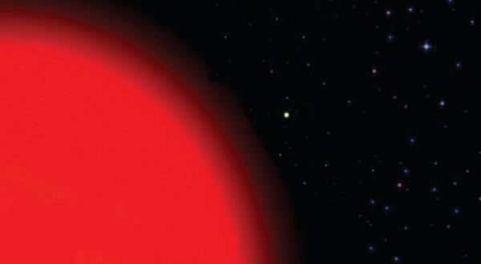

Basic Science - VI The sun is a star that can hold about 12 lakh earths within it.
How big is our Sun! Are there stars bigger than the sun?
Do you also share the child’s doubt? Take a look at the figure showing a comparison of the size of the star thiruvathira and the sun.
Sun
Thiruvathira
The size of stars are something beyond our imagination. Despite being so big, why do the stars appear small in size? Haven’t you seen aeroplanes in the sky? Most of the aeroplanes you see usually carry on board a large number of people. But when they go up a few kilometres don't you see them diminished in size? You might have now realised why the stars which are crores of kilometres away appear small in size.
If someone makes a call from America,we can listen to it at the same time, thanks to the existing modern technology. Apart from the sun, Alpha Centauri is a star closest to the Earth.But if you make a telephone call from Alpha Centauri which is sun’s nearest star, it will take more than 4 years for the sound to reach the earth! 109
Page 38


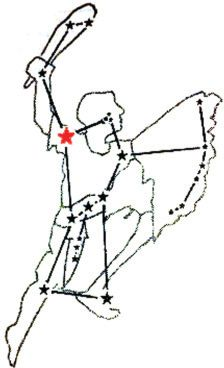
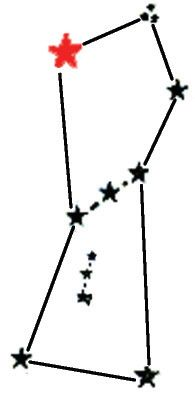
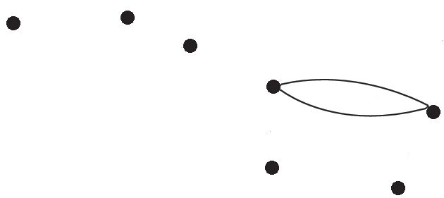
Basic Science - VI
The picture book in the sky Don't you feel like starting a friendship with stars? Don’t you want to get to know them closer? How would you distinguish the 2 stars from one another, all of which 1 3 look alike? 4 Try joining the dots from 1 to 7 7 continuously. 5 What shape do you get? 6 This is the picture one gets when the seven stars which appear moderately bright in the northern part of the sky are joined. The westerners gave it the name ‘big dipper’, meaning ‘big spoon’. We in India call them Saptharshis. We see them in the northern sky in the evening, in the summer season. In the months of December and January, they are seen at midnight.
Constellations You are now familiar with the Saptharshis. Similarly, constellations are groups of stars, imagined into shapes by joining them together using lines. Can you find out any other shapes in the sky? Note it down in your science diary, giving it a suitable name. Let’s familiarise ourselves with a few more similar shapes imagined by people who observed the sky in ancient times.
Orion This is the constellation used by people in the past to ascertain direction while travelling in deserts and the sea. The line joining the head and the sword of orion (hunter) reaches the polar star. This constellation can be seen after dusk in the months of January, February and March. Thiruvathira is the star in red colour on Orion’s right shoulder.
110
Page 39


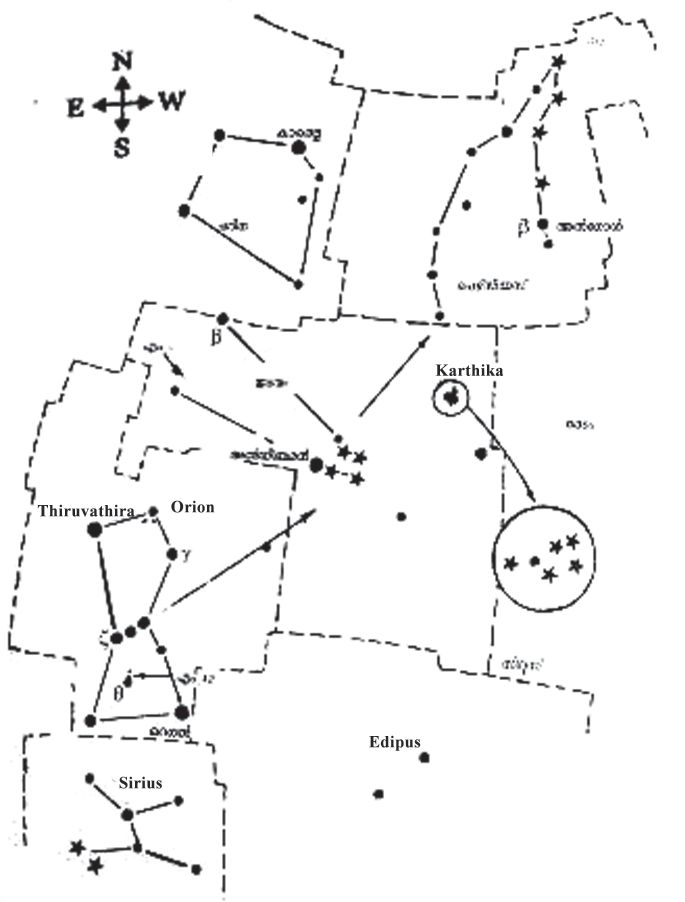
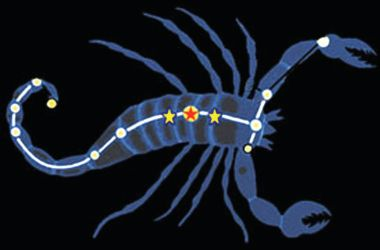
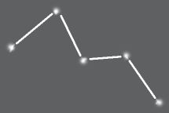
Basic Science - VI
Cassiopia Cassiopia is seen in the sky in the evening from October to December.
Cassiopia
Malayalam months and constellations The figure shows a group of bright stars seen above us a little towards the south in the sky in the months of August and September. What shape do you obtain by joining the dots sequentially? The shape of this big scorpion is named scorpius (vrischikam). It is also the name of a Malayalam month. Likewise, there are 12 constellations imagined in the names of the twelve Malayalam months.
Star map Aren’t you eager to identify more stars? We can use a star map for this purpose. You have to look at it holding it upside down and in accordance with the direction, above your head. On holding it upside down above the head with its north towards the north, we get the east-west directions correct. This map will help you to observe the evening sky from December to March. Likewise, there are star maps for each month and season.
111
Page 40


Basic Science - VI See more stars using 'stellarium' in IT@School, Edubuntu
Observing planets You have already learned about the planets in the solar system. Among them, Mercury, Venus, Mars, Jupiter and Saturn can at times be seen in the sky with naked eyes. Planets generally do not twinkle. Generally they appear bigger and brighter than the stars. Try to familiarise yourselves with stars and planets by organising a sky watch programme at school.
The learner can
$
explain that it is due to the rotation of the earth that the sun appears to rise in the east and set in the west.
$
explain that the position of the moon changes due to the revolution of moon around the earth.
$ $ $ $ $
explain how waxing and waning of the moon occurs.
1)
Is it in Gujarat or Assam that the sunrise is seen first? Why?
112
explain why only one face of the moon always faces the earth. observe the constellations and help others to observe stars. observe and distinguish some of the planets in the sky. make models to show the earth’s rotation and the moon’s revolution.
Page 41
Basic Science - VI 2)
If the moon does not rotate along with its revolution, will it be possible to see all parts of the moon from the earth? Justify your answer.
3)
Prepare a questionnaire for conducting a quiz programme on astronomy in such a way that the following are the answers.
1)
a)
Sun
b)
Constellations
c)
Alpha Centauri
d)
Saptharshis
e)
Full moon
f)
Thiruvathira
g)
Rotation of the earth
h)
27
1 3
days
How long does it take for the moon to complete one revolution? We have learnt that the moon revolves around the earth. How can we find out the time required for the completion of one revolution by observing the change of position of the moon in the sky? How many days are required to see the moon which appeared on the western horizon at sunset to be seen right above the head? Within this time, how much of its revolution is completed by the moon? After how many days do we see the moon, in the eastern horizon during sunset? Within this period, how much of its revolution will have been completed by the moon? How many days will be required for the moon to reach the western horizon? Observe the moon and tabulate your findings. Formulate your own inferences.
113
Page 42
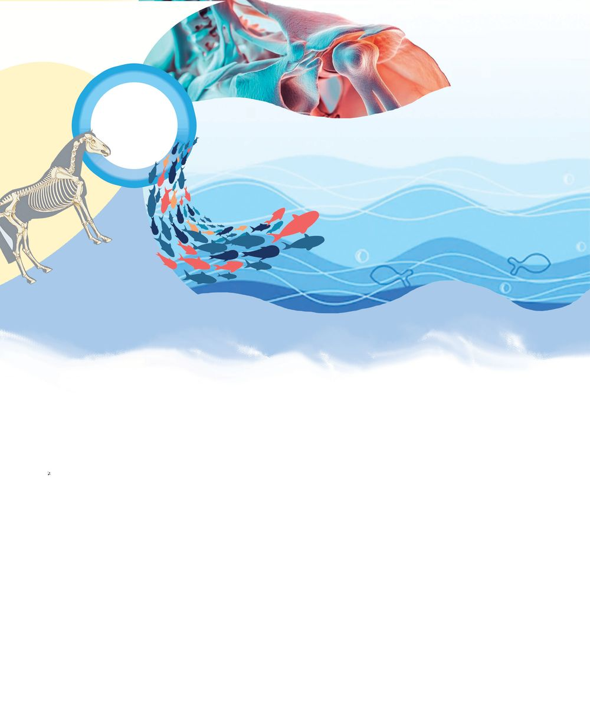

Basic Science - VI Position of the moon in the evening
The part completed in the path of revolution
Number of days needed
When the moon travels from the western horizon to a position right above your head. When it reaches the eastern horizon from the western horizon. When it reaches the western horizon from the western horizon. How many days does it take to see the moon in the same position where it was spotted earlier? You have learnt that the period of revolution of the moon around the earth is 27
1
3
days.
Does your finding agree with this? If not, why? 2.
114
Conduct a study trip to a planetarium.